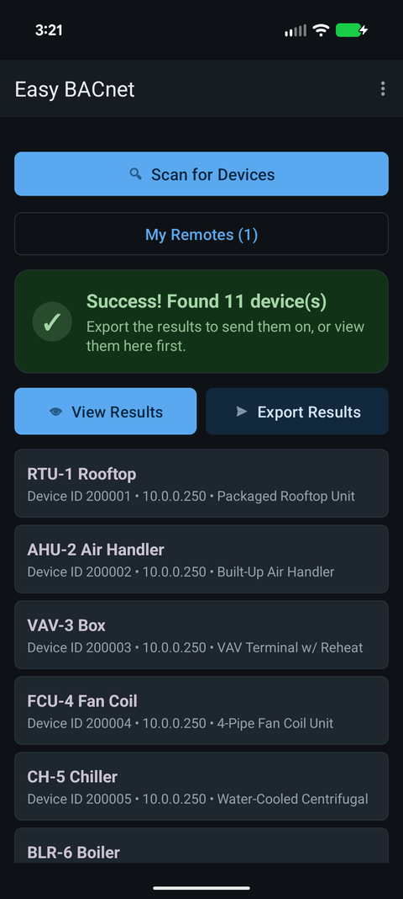

Two devices have the same BACnet Device ID — what do I do?
Updated 30 September 2026
A BACnet Device ID must be unique across the entire BACnet network, and when two devices share one, both misbehave. You'll see a device that flickers in and out of scans, readings that seem to come from the “wrong” unit, or intermittent comms errors — because a Who-Is for that ID gets two answers. The fix is to change one of the two devices to an unused Device ID, which is a job for whoever programmed the controllers. Easy BACnet helps you catch it.

Why duplicates break things
The Device ID (also called the device instance) is how BACnet names a device uniquely — not its IP address, its Device ID. Discovery and every addressed message rely on that number being one-of-a-kind. When two devices claim the same ID:
- A Who-Is for that ID gets two I-Am replies, and tools can't agree which device is which.
- A device may appear and disappear between scans, or its IP/name seems to change, because you're really seeing two different units under one identity.
- Reads can return data from the wrong equipment, and writes can land on the wrong controller — which is exactly why you don't want to command anything until it's resolved.
How to spot one with Easy BACnet
- Scan more than once. A device whose name or IP changes between otherwise identical scans, while the Device ID stays the same, is a classic duplicate signature.
- Watch for a device that won't hold still — present in one scan, gone the next, back again — especially on a network you know is stable.
- Compare the names. If a single Device ID sometimes reads as “AHU-1” and sometimes “AHU-2”, that's two devices, one ID.
Don't command a point while a duplicate ID is live. A write addressed to the shared ID can reach whichever device answers first — possibly not the one you're looking at. Sort the ID out before you override anything.
How it gets fixed
The cure is to give one of the two devices a new, unused Device ID. That is a controls / BMS task — done in the controller's own configuration by the integrator, not something a browsing tool changes for you. Duplicates most often appear when a device is swapped or added and left at a factory-default ID (many ship with the same default), or when two panels are copied from one template without renumbering.
What to hand the integrator
Give them the shared Device ID, both IP addresses you saw it flip between, and both names. The fastest way is to export the scan across a couple of runs so they can see the ID resolving to two different addresses. See what to send when a vendor asks for your BACnet information.